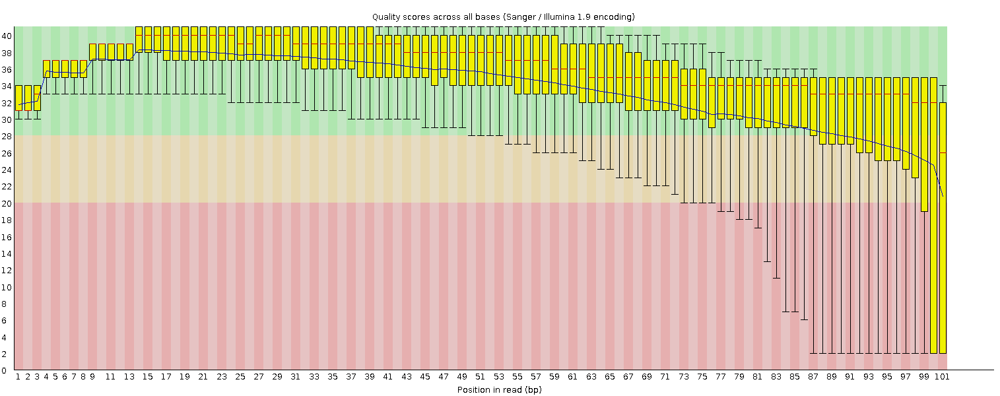
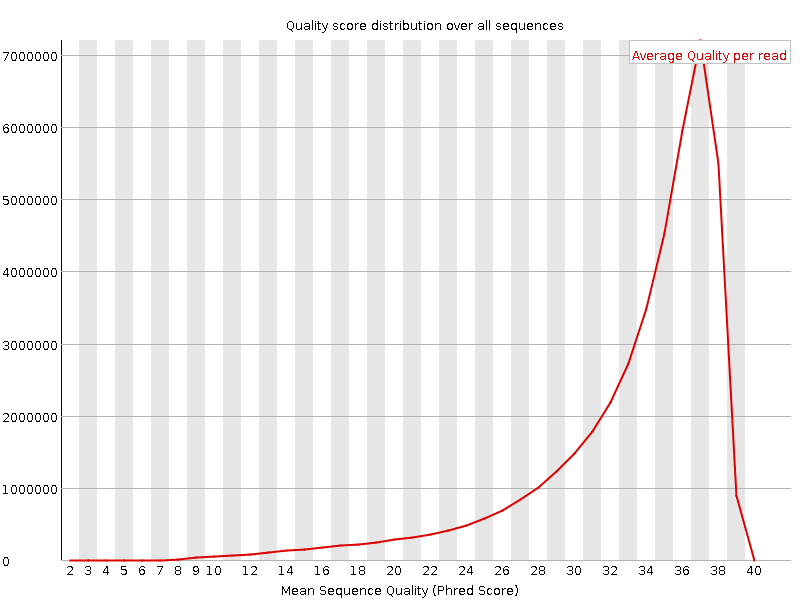
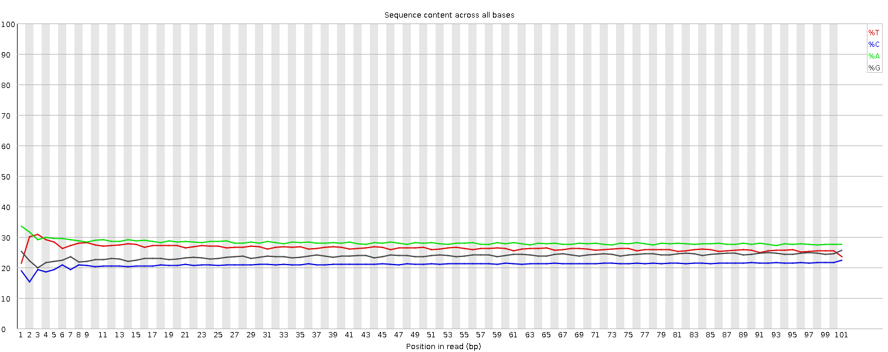
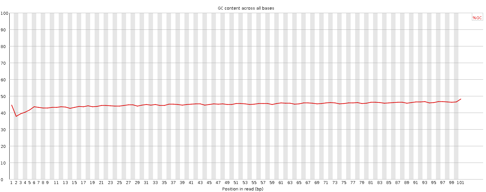
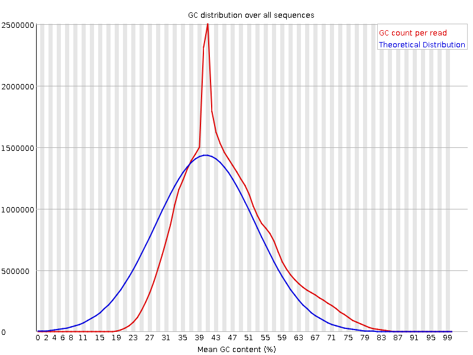
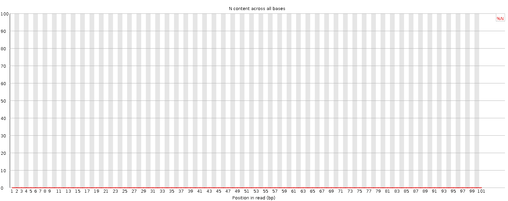
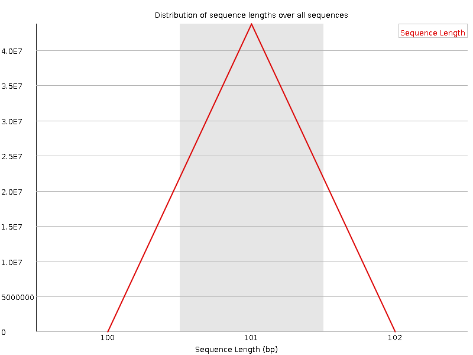
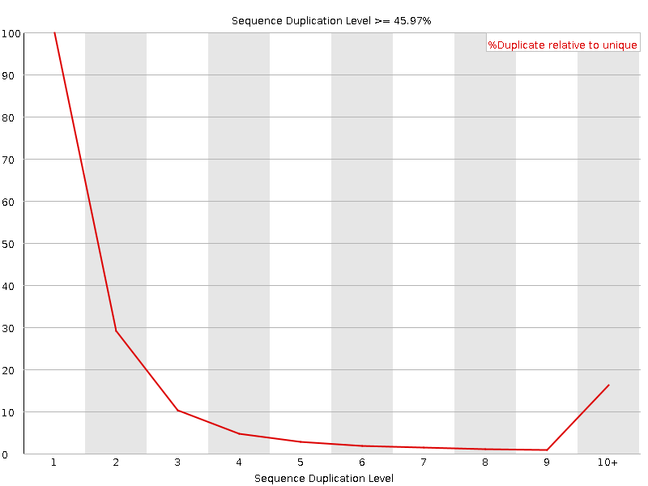
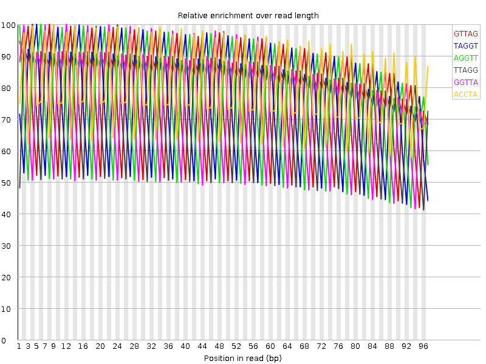

![[OK]](Icons/tick.png) Basic Statistics
Basic Statistics
| Measure | Value |
|---|---|
| Filename | 120406_0171_AD0T2DACXX_1_SA-PE-042_1.sanfastq.gz |
| File type | Conventional base calls |
| Encoding | Sanger / Illumina 1.9 |
| Total Sequences | 43725933 |
| Filtered Sequences | 0 |
| Sequence length | 101 |
| %GC | 45 |
![[FAIL]](Icons/error.png) Per base sequence quality
Per base sequence quality

Per sequence quality scores

![[WARN]](Icons/warning.png) Per base sequence content
Per base sequence content

Per base GC content

Per sequence GC content

Per base N content

Sequence Length Distribution

Sequence Duplication Levels

Overrepresented sequences
| Sequence | Count | Percentage | Possible Source |
|---|---|---|---|
| AGGTTAGGTTAGGTTAGGTTAGGTTAGGTTAGGTTAGGTTAGGTTAGGTT | 389528 | 0.8908397677872305 | No Hit |
| GTTAGGTTAGGTTAGGTTAGGTTAGGTTAGGTTAGGTTAGGTTAGGTTAG | 357386 | 0.8173319023289908 | No Hit |
| GGTTAGGTTAGGTTAGGTTAGGTTAGGTTAGGTTAGGTTAGGTTAGGTTA | 337470 | 0.7717845608920455 | No Hit |
| TAGGTTAGGTTAGGTTAGGTTAGGTTAGGTTAGGTTAGGTTAGGTTAGGT | 268737 | 0.6145940899648727 | No Hit |
| CTAACCTAACCTAACCTAACCTAACCTAACCTAACCTAACCTAACCTAAC | 190120 | 0.43479918427355224 | No Hit |
| AACCTAACCTAACCTAACCTAACCTAACCTAACCTAACCTAACCTAACCT | 187894 | 0.42970838380967197 | No Hit |
| TTAGGTTAGGTTAGGTTAGGTTAGGTTAGGTTAGGTTAGGTTAGGTTAGG | 185614 | 0.42449408683858153 | No Hit |
| ACCTAACCTAACCTAACCTAACCTAACCTAACCTAACCTAACCTAACCTA | 134643 | 0.3079248188940874 | No Hit |
| CCTAACCTAACCTAACCTAACCTAACCTAACCTAACCTAACCTAACCTAA | 133407 | 0.30509812106239104 | No Hit |
| TAACCTAACCTAACCTAACCTAACCTAACCTAACCTAACCTAACCTAACC | 108142 | 0.24731776449458492 | No Hit |
Kmer Content

| Sequence | Count | Obs/Exp Overall | Obs/Exp Max | Max Obs/Exp Position |
|---|---|---|---|---|
| GTTAG | 34993725 | 7.2177763 | 9.444805 | 8 |
| TAGGT | 34671600 | 7.1513343 | 9.454007 | 5 |
| AGGTT | 34083665 | 7.0300674 | 9.292157 | 6 |
| TTAGG | 34008665 | 7.014598 | 9.218735 | 4 |
| GGTTA | 33746960 | 6.960618 | 9.152213 | 12 |
| ACCTA | 18696715 | 4.6022043 | 5.7663903 | 9 |
| CTAAC | 18477290 | 4.548193 | 5.799151 | 1 |
| AACCT | 18098635 | 4.4549866 | 5.609648 | 18 |
| CCTAA | 17546585 | 4.3190994 | 5.4754686 | 10 |
| TAACC | 17424155 | 4.288963 | 5.482182 | 2 |
| TGATG | 16770090 | 3.4589844 | 3.8792691 | 29 |
| GATGA | 16592500 | 3.202665 | 3.5400305 | 48 |